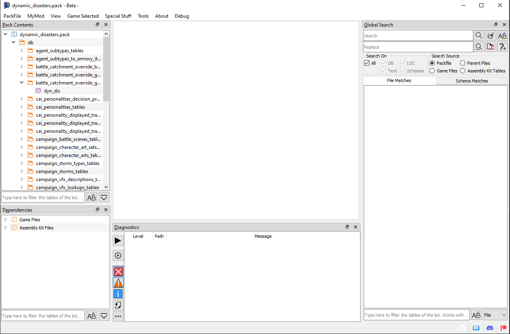
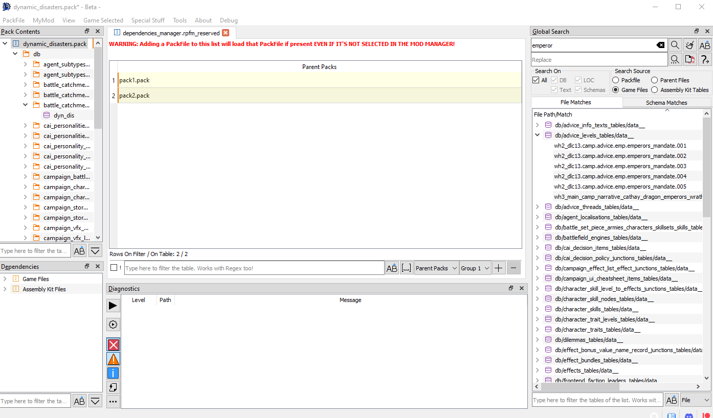

What's RPFM?

This is Rusted PackFile Manager, a.k.a. RPFM, a modding tool for modern Total War Games.
Before explaining what it does, a little explanation on how modding works in Total War games since Empire is due. Since Empire, most of the data of Total War games is in .pack files, packed together so it's faster to read for the game. Those .pack files are containers. Inside them there are a ton of files with the actual data of the game. Some of those files are:
- DB Tables: contains most of the modable stuff of the game, like unit stats, building info,.... They are always in the folder
db/whatever_tables/table_file. - LOCs: contains the actual text you see in screen when playing the game. Yeah, all those letters are not unicorn magic. It's hard to believe, I know, but it's true.
- Lua/Txt/Xml/...: plain text files. Not rocket science.
- RigidModels: the files with the actual 3D models of almost everything you see in the game, like units, monsters,....
- Images: icons, textures, etc....
- ESF Starpos: these are like a snapshot or savegame that gives the game all the info of how everything in the campaign map should be at the start of the campaign. Like what provinces are where, what armies are in X place with Y units....
Now, how it's modding done in modern Total War Games? By creating a mod PackFile, adding some of those files, changing them, and then telling the launcher to use that mod with the changes you did. Simple isn't? Now, what is RPFM? It's a program that let's you create and edit those PackFiles, allowing you to edit the tables, locs,... inside them too. That's more or less what it is.
But hey, isn't this familiar? If you have modded a modern Total War game, yep. RPFM it's a complete reimplementation in Rust and Qt5 of the old PackFile Manager, because PFM it's slow, buggy, and was unmaintained for more than half a year before someone picked it up. If you've used PFM before, you can see it has a similar UI, and most of the features are in the same place, or close by. It's done that way to make it easier to use for modders coming from PFM.
So, you want to give it a try? Then read the section, as without it most of the Advanced Features RPFM has are disabled. And remember, you can always access this documentation in the
About menu, by clicking on Open Documentation.
Initial Configuration

After we start RPFM for the first time, we have to configure a couple of things. To do it, we need to go to PackFile/Preferences, and the window above this will popup. It seems like a lot of new stuff to know, but it's really simple. First the paths:
MyMod's folder: it's the path where your MyMod will be stored. MyMod are explained in a later chapter of this documentation, so for now you just need to know that it's a path RPFM will use to store stuff for your mods. Set it pointing to an empty folder.XXX folder: These are the folders where your games are. RPFM uses them for plenty of things, so remember to set them for the games you have.
In the end, it should look something like this:

Next, the Default Game. RPFM uses a Game Selected setting to configure certain parts of the program to work with one game or another. For example, it changes the way the mods are saved, the default folder to save them, the schema used for the tables,.... Here you can set the game that'll be selected by default when you open the program.
Next, all those checkboxes. You can get an explanation about what they do just by hovering them with the mouse, like this.

There are a couple of settings that may need some aditional explanation:
Use Dark Theme: Self-explanatory, but only available in Windows. The Linux version uses the system's Qt Theme instead.Check for Missing Table Definition: Debug setting to help me get the schemas done. Unless you're updating an schema, don't ever enable it!
And finally, the Shortcuts button. Hitting it will open the Shortcuts window, where you can see and edit all the shortcuts currently used by RPFM.

Just keep in mind that some of the shortcuts are applied when the program starts, so you'll have to close and re-open RPFM for the changes to take effect.
When you're done with the settings, just hit Save. You can restore them to the defaults with the button of the left (same for the shortcuts with their Restore Defaults button). One thing to take into account is that, if any of the paths is invalid, RPFM will delete it when hitting Save.
Now the last step. This is optional, but recommendable and it requires you to have the Assembly Kit for your games installed. We have to go to Special Stuff and, for each game we have, hit Generate PAK File. This will create a special file that will help RPFM with reference data for table columns. It's not enabled for Empire and Napoleon for now, but it should work for every other game.
With that, we have completed the initial configuration. Starting on version 1.0, new updates should continue to work with the same settings/shortcuts (as long as new big things aren't added), updating them automatically in case a new setting/shortcut is introduced, storing the saved configurations in the files settings.json and shortcuts.json, in RPFM's folder.
So now that we're done configuring RPFM, let's take a look at the features it has to offer.
Buttons and What They Do
In this chapter we will check every freaking general use button and hidden action RPFM has (PackedFile-specific actions are in their respective chapter), so you don't have to ask what they do. Just remember that, in addition to this chapter, you can hover with the mouse over almost every button in RPFM and in the status bar at the bottom will appear a short message explaining what the button do.
Ere we go!
Menu Bar
First, the top Menu bar. It has five menus in it, that'll be explained in the following chapters. But to give you an idea of what we have:
PackFile: It's where all the basic stuff likeNew,OpenandSaveis. Pretty straightforward.MyMod: It's where all the stuff related with the use of theMyModfeature is.Game Selected: It's where you select the game you are modding the current PackFile for if RPFM failed to select it for you.Special Stuff: It's where weird stuff goes.About: It's where you go when you want to read this documentation, check the Patreon, or check what version of RPFM you have.
And now, let's begin!
PackFile Menu

Here, we can find the basic actions:
New PackFile: Creates a new PackFile outtanowhere.Open PackFile: Opens a PackFile in RPFM.Save PackFile: Saves the changes done in a PackFile to disk.Save PackFile As: Saves the current PackFile with another name.Preferences: Open the Preferences window.Quit: Makes you enter in a lottery. Seriously.
And some more... specific ones:
Open From Content…/xxx.pack: Open the selected PackFile from the Content folder (Workshop mods) of the game. Requires the game's path to be configured.Open From Data…/xxx.pack: Open the selected PackFile from the Data folder of the game. Requires the game's path to be configured.Load All CA PackFiles: Creates a fake PackFile in memory and tries to load into it all the data from every Vanilla PackFile of the game. Keep in mind that this takes a while.Change PackFile Type: Allows you to change the open PackFile's Type and configure some options for it.
About the PackFile Types, it's what the game uses to load in order all the data of the game. There are the following types, in the order the game will load them:
Boot: Used by boot.pack. Not useful for modding. First to load.Release: Used by most of CA PackFiles. Not useful for modding.Pactch: Used by some CA PackFiles, specially in Shogun 2 and older games. Not useful for modding.Mod: Used by most mods. This is the one you'll mostly use.Movie: Used by some CA PackFiles and some specific mods. Useful for modding. Last to load.Other: Something for RPFM to categorize unrecognized types. Never use it.
There are also a few more options to configure a PackFiles under this menu:
Index Includes Timestamp: There is a timestamp, maybe a Last Modified Date in the index of the PackFile.Index Is Encrypted: The index of the PackFile is encrypted.Data Is Encrypted: The data of the PackFile is encrypted.Header Is Extended: The header of the PackFile is extended (only seen in arena).
About these options, just take into account that any PackFile with any of these options enabled will NOT BE RECOGNIZED as a mod by the launcher. And RPFM doesn't support saving PackFiles with Index Is Encrypted, Data Is Encrypted or Header Is Extended enabled.
And, if you don't enable Allow Editing of CA PackFiles, RPFM will not let you save Boot, Release or Patch PackFiles.
And with that, we finish the PackFile Menu. Next, the MyMod menu.
MyMod Menu

MyMod is a feature to help modders keep their mod's data organized. The system is almost a 1:1 clone of PFM's MyMod feature so it should be easy to use for veterans too.
For those new with the concept, remember that MyMod folder we set in the settings? When we create a MyMod, in that folder will be created a folder for the game the mod's for (if it didn't exist before), and inside that there will be a PackFile and a folder, both with the name of your mod. Each time you extract something from the PackFile, it'll be automatically extracted in his folder, mirroring the structure it has in the PackFile. For example, extracting a table will result in the table being extracted at mymod_folder/db/table_name/file._ Adding Files/Folders from the MyMod folder will also add them mirroring the path they have. For example, adding a file from mymod_folder/db/table_name/file_ will add the file in PackFile/db/table_name/file.
This makes easier to keep track of the mod files, and you can even put that folder under .git, or any other version control system, as you can have an unpacked mod that you can pack with a single click (well, a few clicks).
The MyMod Menu has the following buttons:
New MyMod: It opens theNew MyModDialog. It's explained under this list.Delete Selected MyMod: It deletes the currently selectedMyMod. This cannot be undone, so you'll got a warning before doing it.Install: Copy the currentlyMyModPackFile to the data folder of his game, so you can test your changes in an easy way. You can re-install the mod to test further changes.Uninstall: Removes the currently selectedMyModPackFile from the data folder of the game.XXX/yourmod.pack: Open your previously createdMyModto edit, delete, install,.... whatever you want, baby!
When we click on New MyMod, the following dialog will appear:

Here you can configure the name and game the mod is for. Once you're done, hit Save and your new MyMod will be created and opened.
And lastly, a couple of aclarations:
- To be able to use
Install/Uninstallyou need to have yourMyModopen. - Only
MyModPackFiles opened fromXXX/yourmod.packwill enjoy theMyModfeatures, like keeping the paths when adding/extracting files. Manually openedMyModPackFiles will be treated as regular PackFiles.
Game Selected Menu

In this menu you can change the currently selected game. When opening PackFiles, RPFM tries to be smart and auto-select a game, but there are some PackFiles that are the same between games (for example, Attila and Warhammer 1 PackFiles are identical), so... just make sure the right game is selected after opening a PackFile, as that affects how many parts of the program work. The complete list of supported games is:
Warhammer 2: Full Support.Warhammer: Full Support.Thrones of Britannia: Full Support.Attila: Full Support.Rome 2: Full Support.Shogun 2: Full Support.Napoleon: Almost Full Support. MissingGenerate PAK Filesupport.Empire: Almost Full Support. MissingGenerate PAK Filesupport.Arena: Read-Only Support for PackFiles. Incomplete schema.
Special Stuff Menu

This menu contains... special features implemented for specific games. Basically, any feature that doesn't really fit in any other place goes here. Here we have:
Patch SiegeAI: used in Warhammer 1 & 2 for creating siege maps that the AI can handle. Basically, make your map with the stuff required for the AI to work, and then patch his PackFile with this.Optimize PackFile: reduces the size of your PackFile by cleaning your tables from data that's unchanged from the vanilla game. It also does the same for Loc PackedFiles, if you have the game's language set to English . For example, if you have a table where all rows but one are exactly the same as the ones in vanilla tables and another table that's a 1:1 copy of a vanilla table without changes, RPFM remove all the rows but the one you changed from the first table, and it'll remove the second table. This is meant to improve compatibility with other mods , and to reduce the size of the PackFile.Generate PAK File: generates a file from raw data from the Assembly Kit that allows RPFM to provide a ton of reference data from tables not in the game. Or easier to understand, if you use the dependency checker, you'll have far fewer blue columns. Doesn't work for Empire and Napoleon, yet.
About Menu

Pretty simple and straightforward menu:
About QT: Shows info about the version of Qt (the framework RPFM uses for the UI) in use.About RPFM: Shows info about the version of RPFM in use, and the credits.Open Manual: Opens this manual on the web browser you have as Default.Support me on Patreon: Open RPFM's Patreon page. In case you want to contribute with money or you want to check the dev blogCheck Updates: Checks if there is a newer version of RPFM available.Check Schema Update: Checks if there is any newer version of RPFM's Schemas available and downloads it.
The Schemas I talked in the last point are what allows RPFM to decode and open the tables of all the supported games. Newer schemas means more tables to open. It's very common that after an update a few tables change his structure and are no longer decodables. To get them to work again, the schema has to be updated.
And that's all for the top Menu Bar. Now we'll take a look at the thing you're going to use the most (or almost the most): the TreeView.
PackFile TreeView

That thing on the left with folders and stuff is the PackFile's TreeView. That's where all the files inside your PackFiles will show up. When you Right-Click on any of them, this context menu will show up:

These are the actions you can use to alter the PackFile. Each one of them has a hotkey, in case you're a lazy bastard. These are all the actions in the menu:
Add…/Add File: Allows you to add one or more files to the PackFile.Add…/Add Folder: Allows you to add a folder and all his files to the PackFile.Add…/Add from PackFile: Allows you to add files or folders from another PackFile to your PackFile. Just, select whatever you want to add, double click it and it'll be added to your PackFile, keeping his path.Create…/Create Folder: Allows you to create an empty folder. Due to how PackFiles work empty folders are not saved so, if you want to keep the folder, add a file to it.Create…/Create Loc: Allows you to create an empty Loc PackedFile. You can create his relative path too writing something likefolder1/folder2/fileinstead of just the file name.Create…/Create DB: Allows you to create an empty DB Table.Create…/Create Text: Allows you to create an empty text file. ANY TEXT FILE (including lua, xml,...). You can create his relative path too writing something likefolder1/folder2/fileinstead of just the file name.Create…/Mass-Import TSV: Allows you to import a bunch of TSV files at once. The system is able to distinguish between DB and Loc TSV files, so you can import all of them at the same time, and RPFM will create all the files needed, in their correct place.Create…/Mass-Export TSV: Allows you to export as TSV every DB Table and Loc PackedFiles in your PackFile at once.Open…/Open with Decoder: Allows you to open a table in theDB Decoder. Only used to decode new tables, so…. You shouldn't touch this.Open…/Open Dependency Manager: Allows you to open the list of dependencies included in the PackFile. Check the next chapter to learn what thisDependency Managerthing is about.Open…/Open with External Program: Allows you to open a PackedFile with an external program. Keep in mind that, if you modify the file, changes will NOT BE INCLUDED in the PackedFile itself, but in a file in the TMP folder of your system. If you want to conserve these changes, save that file somewhere, edit it and then add it back to the PackFile.Open…/Open in Multi-View: Allows you to open a PackFile in a "secondary view", so you can have up to two PackedFiles open side-by-side.Rename…/Rename Current: Allows you to rename whatever is selected, except the PackFile.Rename…/Apply Prefix to Selected: Allows you to apply a prefix to every file inside the selected folder.Rename…/Apply Prefix to All: Allows you to apply a prefix to every file in the PackFile.Merge DB/LOCs: Allows you to merge multiple DB/LOC Tables into one.Delete: Allows you to delete whatever is selected. If the PackFile is selected, it removes every file from it.Extract: Allows you to extract whatever is selected out of the PackFile. If whatever you selected is compressed/encrypted, RPFM will decompress/decrypt it before extracting, so the resulting file is usable.Global Search: Allows you to perform a simple search across every DB Table or Loc PackedFile inside your PackFile, providing you with a filterable list of results.
Additionally, with the shortcuts Ctrl++ and Ctrl+- you can expand/collapse the entire TreeView. This action is shortcut only, it's not in the Contextual Menu.
Keep in mind that the availability of these actions depends on what is selected, and on the currently loaded schemas. For example, you can't add anything if you have selected a PackedFile. Also, keep in mind that if there is a MyMod loaded, some of these actions may work different.
Also, when you add/modify a file, it changes in the TreeView with the following colour code:
- Green/Dark Green : added file.
- Yellow/Dark Yellow : modified file.
- Magenta/Dark Magenta : added AND modified file.
This colour code is applied to the parents too, up to the PackFile, so you easily know what you changed since the last time you saved the PackFile.
And last, the TreeView Filter. It's that thing with buttons at the bottom of the TreeView. It allows you to filter the contents of the TreeView by a pattern (Works with Regex!). The buttons below the filter bar where you write the pattern are:
Auto-Expand Matches: automatically expand all the matched folders/files. This combined with a ton of matches (empty pattern and +60k files in data.pack) can hang the program for a while, so be cautious on when do you use it.AaI: the case sensitive button. Not too much to explain here.Filter By Folder: in case you want to find a folder and not a file (for example, searching a table) tick this. I'll show you the matched folder and all his contents.
Dependency Manager

The Dependency Manager allows you to modify a special list of PackFiles saved inside your mod's PackFile. When starting the game, the launcher will try to load the PackFiles in this list BEFORE your PackFile. If a PackFile is not found, it'll be ignored. This list can be used to hardcode dependencies into your PackFile. In his Contextual Menu (right-click) you can find some basic commands to manipulate the list, like Add Row, Insert Row, Copy, Paste... Not much more to say about this really.
Global Search

Global Search allows you to perform a simple search (accepts Regex) across every DB Table or Loc PackedFile inside your PackFile, providing you with a filterable list of results in the right of the screen. You can use it from the TreeView's Context Menu, or with the shortcut Ctrl+Shift+F while the TreeView is focused.
The Matches lists on the right of the screen shows every match for your search in DB Tables (top table) and Loc PackedFiles (bottom table). Both lists are filterable (with regex support) and contain the path to the PackedFile, Column, Row, and Matched Text. If you double-click on them, their PackedFile will be open and the match selected. Also, these lists are updated when you make changes, so if you, for example, remove a match from a table, that match will be removed on-the-fly from the list.
The only inconvenient is that doing this in PackFiles with an enormous number of tables and a brutal number of matches will cause RPFM to hang a second after each edit.
PackedFiles
As explained before, RPFM can not only edit the PackFiles of modern Total War Games, but it can also edit the Files inside them (PackedFiles) without the need of extracting them. Ín this section we'll see what PackedFiles can RPFM see/edit.
DB Tables

DB Tables are where most of the moddable data of the games is. For example, unit stats, faction colors, buildings info,... RPFM has a complete integrated editor for them. The screenshot above is how a DB Table looks in RPFM when opened.
The editor includes cross-table references, which means that, if one column references another table, you'll get a combo when editing that column with data to input from the other table. Also, if you hover over the header of any column that references another table, is referenced on another table, or has a description in the schema, you can see in the tooltip the column's special info.
All columns are also movable, so you can rearrange them however you want, and numeric columns (except long integer columns) have a numeric-only editor. And you can sort the table by one column one way or another, or remove the sorting with a third click in the column title.
At the bottom of the window you have a real-time filter. Select the column you want to use to filter, if you want it to filter as Case Sensitive, and just write and see how the table gets filtered as you type. It works with Regex too. For example, the following will only show up the rows that contain in their Key column v_b or fake:

Here you have a Regex Cheatsheet in case you want to use more complex filters: https://www.cheatography.com/davechild/cheat-sheets/regular-expressions/
One last thing before checking the context menu is that RPFM remembers the following stuff when you close and re-open the table:
- Filter State.
- Search & Replace State.
And, if you have the corresponding settings enabled, it also remembers:
- Sorting state of the table.
- Visual Order of the columns.
- Hidden columns.
That way the table is just like you left it when you open it again. This memory lasts only until the open PackFile changes, but you can configure RPFM to remember it even in that case by enabling Remember Table State Across PackFiles in the Preferences dialog.
Now, with the Right-Click (or Contextual) Menu:

These are all the actions available for DB Tables:
- ´Add Row`: Appends an empty row at the end of the table.
Insert Row: Inserts an empty row after every row with a selected cell.Delete Row: Uses the computational power of your GPU to mine cryptocurrencies. Joking, it deletes any row with a selected cell.- ´Apply…/Apply Maths to Selection`: Allows you to apply a mathemathical operation to the selected cells.
Apply…/Rewrite Selection: Allows you to rewrite the contents of a complete selection with whatever you want.Clone…/Clone and Insert: Creates a duplicate of every row with a selected cell and inserts the duplicate just below the original row.Clone…/Clone and Append: Creates a duplicate of every row with a selected cell and appends the duplicates at the end of the table.Copy …/Copy: It copies whatever is selected to the Clipboard, in a format compatible with Excel, LibreOffice Calc and others.Copy …/Copy as LUA Table: It copies the entire table as a Lua "Map<String, Vector<data>>" if the table has a key field, or as a series of Vectors if it hasn't, ready to paste it in a script. For scripters.Paste…/Paste: It tries to paste whatever is in the Clipboard to the selected cells. It does nothing if there are no selected cells, or the clipboard's contents cannot be pasted into the selected cells. This works by pasting until it ran out of contents to paste.Paste…/Paste as New Rows: It tries to paste whatever is in the Clipboard as new rows, appended at the end of the table. It doesn't do anything if the contents of the Clipboard cannot be pasted without errors. In case the contents could be pasted as a "Partial" row, it creates an empty row, and paste what it can paste, leaving the rest of the row empty.Paste…/Paste to Fill Selection: It tries to paste whatever is in the in every selected cell.Search: Open the Search & Replace panel, that you can use to search any text pattern you want in the table, and replace it if you want. It works in combination with the filter, so you can even do more precise searches combining them!Import: Allows you to import a TSV file to the table, overwriting whatever the table currently has. IT'S NOT COMPATIBLE WITH PFM TSV FILES.Export: Allows you to export the table as a TSV File, compatible with Excel, Calc….Hide/Show…/xxx: Allows you to hide/show the columns of the table at will. If the right setting is enabled in the preferences, this configuration may be remembered when changing between tables.Undo: Allows you to undo… almost every action done in the table. Even TSV Imports.Redo: Allows you to undo every undo action. This goes deeper into the rabbit hole…
Tables uses the same colour code for cells and rows as the TreeView. And that's more or less what you can do with a DB Table.
Apart of these, the Del key in DB Tables acts as an Smart Delete key. This means depending on what you have selected when you press Delete it'll delete:
- If you have selected random cells, it'll delete their contents.
- If you have selected a full row , it'll delete the row from the table.
- If you have a combination of both , it'll delete rows where all cells are selected, and it'll delete the contents of the cells where not all cells in a row are selected. Fancy.
LOC PackedFiles

Loc PackedFiles are files that end in .loc, and contain most of the texts you see ingame. When you open them, you can see they work like a… DB Table. They are really an special type of table, so you can do to them exactly the same stuff you do can do to DB Tables. Loc PackedFiles uses the same colour code for cells and rows as the TreeView.
One thing to take into account (and really, the only one) is that if you want to write multiple lines in a cell (for example, for multiple paragraphs in one single cell) you can write \n and RPFM will take care of saving it properly, so you see multiple lines ingame. Same with \t for tablulations.
Text PackedFiles

RPFM can open and edit a wide variety of Text PackedFiles, such as XML, HTML, LUA, TXT,.... It has native Undo/Redo support, Copy/Paste support,... the normal things for a very basic text editor.
Also, exclusive for Warhammer 2 Lua files, there is an option to Check Syntax. This will pass the file through Kailua (if installed and in the Path) and return you a list of errors encountered. Keep in mind this is experimental, exclusive to Warhammer 2 Lua Files and it may fail.
RigidModel PackedFiles

RigidModels are 3D models used by Total War Games. RPFM allows some limited editing of them. It allows you to change any of the textures each model uses and to patch Attila's RigidModels for being loadable in Warhammer games (just the model, it doesn't patch collisions or logic). It doesn't work with all the RigidModels.
Images

RPFM can open a variety of image formats, such as PNG, JPG, TGA, DDS (most of them)... Just select the image you want to see, and it'll open in the right side of the window.
DB Decoder

RPFM has an integrated DB decoder, to speed up a lot the decoding process of the definition of a table. It can be opened by right-clicking on a table file and selecting Open/Open with Decoder. Only works on tables.
The decoder screen is a bit complex so, like Jack the Ripper, let's check it in parts, one at a time. Starting by the left we have this:

This is the PackedFile's Data view. It's similar to a hexadecimal editor, but far less powerful, and it's not editable. In the middle you have Raw Hexadecimal Data, and in the right, you have a Decoded version of that data. To make it easier to work with it, both scrolling and selection are synchronised between both views. So you can select a byte in the middle view, and it'll get selected in the right one too. The colour code here means:
- Red : header of the table. It contains certain info about what's in the table, like his uuid, amount of rows,....
- Yellow : the part of the table already decoded following the structure from the fields table.
- Magenta : the byte where the next field after all the fields from the fields table starts.
For performance reasons, this view is limited to 60 lines, which should be more than enough the decode the first row of almost every table. This limit may be removed in the future if I manage to fix the performance slowdown....
Next, to the right, we have this:

This is the Fields List. Here are all the columns this table has, including their title, type, if they are a key column, their relation with other tables/columns, the decoded data on each field of the first row of the table, and a Description field, to add commentaries that'll show up when hovering the header of that column with the mouse.
If we right-click in any field of the table, we have these three self-explanatory options to help us with the decoding:

And finally, under the Fields List, we have this:

The Current Field Decoded will show up the field that starts in the magenta byte of the PackedFile's Data view, decoded in the different types the tables use. It's use is simple: check what type makes more sense (for example, in the screenshot, it's evidently a StringU8), and click the Use this button in his row. Doing that will add a field of that type to the Fields List, and it'll update the PackedFile's Data View to show where the next field starts. Keep doing that until you think you've decoded the complete first row of the table, hit Finish It! at the right bottom corner, and select the table again. If the decoding is correct, the table will open. And that's how ~I met your mother~ you decode a table.
Under Current Field Decoded we have Selected Field Decoded. It does the same that Current Field Decoded, but from the byte you selected in the PackedFile's Data View. Just select a byte and it'll try to decode any possible field starting from it. It's for helping decoding complex tables.
To the right, we have some information about the table, and the Versions List (a list of versions of that table we have a definition for). If we right-click in one of them, we can load that version (useful to have something to start when a table gets updated in a patch) or delete it (in case we make a totally disaster and don't want it to be in the schema).

And at the bottom, we have:
Generate Diff: generates a diff between your schema and the current schema (from Github) and saves it to RPFM's folder.Remove all fields: removes all decoded fields, returning the table to a clean state.Finish It!: Save theFields Listas a new definition for that version of the table in the schema. The definition is inmediatly available after that, so the changes can be used immediately.
DB Types
People have complained that the types used in the DB Decoder and, by extension, in the tables are not intuitive enough, so here is a little explanation to shut you up:
Bool: One byte. Can be 00 or 01.Float, orf32: 4 bytes that represent a floating point number. Can be really anything.Integer, ori32: 4 bytes that represent a signed integer (admits negative numbers). Can be really anything.Long Integerori64: 8 bytes that represent a signed integer (admits negative numbers). Can be really anything.StringU8: An UTF-8 String. It has an u16 (2 bytes) at the begining that specify his lenght, and then the String itself with each character encoded in one byte.StringU16: An UTF-16 String. It has an u16 (2 bytes) at the begining that specify his lenght, and then the String itself with each character encoded in two bytes.OptionalStringU8: Like a UTF-8 String, but with a bool before. If the bool is true, there is aStringU8after it. If it's false, then there is nothing more of that field after it.OptionalStringU16: Like a UTF-16 String. but with a bool before. If the bool is true, there is aStringU16after it. If it's false, then there is nothing more of that field after it.
There are some extra types that RPFM doesn't yet support for one reason or another:
OptionalInteger: Like an Integer, but with a bool before. If the bool is true, there is aIntegerafter it. If it's false, then there is nothing more of that field after it. Only seen in one table in Warhammer 2.List: It's... like a table inside a field. It's a complex type used in many XXX_models tables. Not yet implemented because it's a pain to implement properly on the UI side.
If you need more help to understand these types, please search on google.
Appendix
- Basic shortcuts (non-editable) for EVERY Table View provided by Qt:

-
If RPFM crashes, it'll generate an error log in his folder called "error-report-xxxxxxx.toml". That file can help me find the problem, so if you want to help reporting the bug, send me that file too.
-
DON'T OPEN FILES WITH RPFM AND OTHER PROGRAMS LIKE PFM AND THE ASSEMBLY KIT AT THE SAME TIME!!!!! Just in case you don't realise the problem, let me explain it: to not fill your entire RAM with data you probably aren't going to need, RPFM only reads from disk when needed and what it needs. This means that, if you open the same file with another program, that program MAY LOCK YOUR FILE, CAUSING EITHER A CORRUPTED PACKFILE OR A VANISHED PACKFILE WHEN SAVING.
-
If you still want to do it, disable the
Use Lazy-LoadingSetting in thePreferencesand the entire PackFile will be loaded to RAM. Weird things may still happen, but if the PackFile is loaded to RAM, you can just clickSave PackFile As...and your PackFile will be saved properly.
Compilation Instructions
Just in case someone wants to collaborate with code (who knows, maybe there is someone out there in the wild) here are the instructions to compile RPFM in the different supported OS:
Windows
You need to download and install:
- Qt 5.8 (or superior).
- MSVC.
- The LZMA lib (find it, or get it compiled yourself).
- Rust 1.32 (or superior).
TODO
Linux
You need to install the following packages on your distro:
- Qt 5.8 (or superior).
- xz.
- Rust 1.32 (or superior).
Then just move to RPFM's source code and execute:
# To build the executable without optimisations.
cargo build
# To run the executable without optimisations.
cargo run
# To build the executable with optimisations.
cargo build --release
MacOS
Don't know. Don't have a Mac to compile to it and test.
In case you just want to contribute to these docs, you just need to download this repo, install Rust, then move to the repo's folder and:
# To install mdbook.
cargo install mdbook
# To build the docs and open them in a browser.
mdbook build --open
These last instructions should work in any OS where you can install Rust.
Changelogs
Here you can check the changelogs for RPFM and for each of the schemas. Just keep in mind the initial release of the schemas is just the point where I first got the automatic generation for them working, so the minimum version may be not the initial one. And here are the links:
RPFM Changelogs
Here you can find all the changelogs for every RPFM update since... since I started writing changelogs for it. If you don't want to scroll, just click in the version you want to check, and it'll send you right to it.
-
1.5 Versions, where the parts became one and one became able of multiple things:
-
1.4 Versions, where the Empire was crushed:
-
1.3 Versions, when the Shogunate and the other island kingdom fell under my feet:
-
1.2 Versions, where RPFM became dark and lazy:
-
1.1 Versions, when I started to globally search more goals, like google, but less evil:
-
1.0 Versions, when Rome fell under our power, and I accomplish one of my life goals:
-
0.9 Versions, when the Qt-ness of RPFM was increased by 300%:
-
0.8 Versions, when Attila came to our lands and the optimized logic for PackFiles drove him away:
-
And the misterious old ones:
Before this, only God, Git and I knew what changes where done. Now, only God and Git know it. And in case you like scrolling, from here you have all the changelogs.
1.5.0
- Implemented Multi-Selection support for the Main TreeView.
- Implemented Multi-Extraction support for the Main TreeView.
- Implemented Multi-Deletion support for the Main TreeView.
- Implemented
Merge DB/Locfeature. - Implemented support for creating relative paths with the
Create PackedFilefeature. - Documentation rewritten and moved to https://frodo45127.github.io/rpfm.
- Documentation expanded with explanation about DB Types.
- Documentation expanded with RPFM Changelogs.
- Documentation expanded with Schema Changelogs.
- Internally simplified
Add Rowfeature. - Internally simplified
Insert Rowfeature. - Reworked
Apply Prefix to SelectionintoRewrite Selection. - Reworked
Paste in selectionintoPaste(similar to excel'sPastemode). - Reworked
Apply Maths to Selectionto allow far more complex mathematical operations. - Reworked DB Tables and Loc PackedFiles UI modules into a single common module.
- Removed the
Use PFM Extracting Behaviorsetting (now it just works like that). - Actions previously exclusive of DB Tables (like
Apply Maths) now work in Locs too. - Fixed CTD when you
Ctrl+Clicktwo times on an element of theAdd From PackFileTreeView. - Fixed a bug that caused DB Tables saved for Empire and Napoleon to crash their respective game on launch.
- Fixed a bug that caused DB Tables and Locs that had just be created/added to lose their color in the Main TreeView when opened.
- Fixed a bug that, under very specific circustances, caused all contextual menu's actions to be greyed out until restart.
- Fixed a bug that caused copied cells from sorted columns to be copied unsorted.
- Now new rows are automatically added if you try to paste something in a DB/LOC Table and there are not enough rows for it.
1.4.2
- Implemented a new
Generate PAK FileSpecial Feature for all games except Empire and Napoleon. - Divided the
Remember Column Statesetting into multiple individual settings. - Added a new
Check for Missing Table Definitionsetting to the Settings window. - Now you can unsort a table by clicking his column header 3 times (sort asc, sort desc, unsort).
- Fixed multiple Special Stuff actions for Shogun 2, Napoleon and Empire doing nothing and showing no status tip.
- Fixed a CTD when trying to Search&Replace case insensitive data in a DB Table/Loc.
- Fixed a bug that caused the Settings/Shortcuts to get weird if you hit
Restore Defaultthen "Cancel`. - Fixed a bug that caused the
This column is referenced in X tableto not popup when hovering the column header of a referenced column. - Some internal changes as preparation for a future cleanup.
1.4.1
- Little bugfix for the CTD when you try to "Save as..." a PackFile. Nothing more.
1.4.0
- Implemented complete support for Napoleon.
- Implemented complete support for Empire.
- Implemented a Live Filter for the
Folder TreeView. - Now you can see what tables/columns reference to a column by hovering the column's title with the mouse.
- Improved behavior when dealing with compressed/encrypted PackFiles.
- Many small fixes and changes.
1.3.5
- Implemented initial support for compressed PackedFiles (only decompression for now).
- Updated RPFM's code to use Rust 2018 edition.
- Restructured a lot of code to be more consistent.
- Improved decryption logic (opening a 300mb PackFile has come down from 25s to 9s).
- Fixed a bug that caused PackedFiles to not open under certain circustances.
- Fixed a bug that caused the
Global Searchfeature to load to memory useless data. - Fixed a bug that caused the
Global Searchfeature to not work when used withLoad All CA PackFiles. - Fixed a bug that caused very specific PackFiles to not open.
- Fixed missing references in Warhammer 1 tables.
- Fixed all instances of reference columns misplaced in tables, for all supported games.
- Fixed a bug in the "Apply Maths to Selection" feature that could cause operations with floats to not work properly.
- Fixed certain very rare bug that could theoretically cause RPFM to save incomplete PackFiles.
- Fixed a few hangs when trying to add files/folders to a MyMod.
- Fixed a ton of Clippy warnings (about 400).
- Fixed little bugs here and there. Now their legs work again.
1.3.4
- Fixed the CTD when using SmartDelete without selecting full rows introduced in 1.3.3.
1.3.3
- Implemented a "Disable combos in tables" setting, so baldy can shut up.
- Fixed a bug that caused combos to "forget" their current value if that value wasn't originally in the combo.
- Fixed a hang when using the "MyMod/Install" feature.
- Fixed a bug that caused the MyMod menu options to be disabled when you just created a MyMod.
- Heavily optimized the "Delete Row" and "Smart Delete" features for DB Tables and Loc PackedFiles.
1.3.2
- Fixed CTD when adding/inserting an empty row, then reopening the same table.
- Fixed broken decryption logic for certain PackFiles.
- Fixed SpinBoxes not allowing negative numbers on tables.
1.3.1
- Fixed weird behavior when using copy/paste features.
- Fixed weird behavior and CTD when undoing/redoing an action that adds or remove rows of a table.
1.3.0
- Implemented support for TW: Thrones of Britannia.
- Implemented support for TW: Shogun 2.
- Implemented
Copy as LUA Tablefeature for Loc PackedFiles. - Implemented
CTD Loggerfeature (more on that later). - Now float fields in DB Tables use a
SpinBox(cell with arrows to increase/decrease by one) when editing. - Now referenced columns show a
ComboBoxwhen editing, and autocomplete what you write. - Now Loc PackedFiles escape
\nand\tcharacters automatically (more on that later). - Now you can replace open PackedFiles (it'll warn you before, just in case).
- Now every table in the program uses alternate row colors.
- Now if RPFM fails to decode a table, it'll tell you exactly the row/column where it fails.
- Now TW: Arena PackFiles can be opened again (thx to Trolldemorted for this one).
- Reworked
Undo/RedoSystem for DB Tables and Loc PackedFiles (more on that later). - Replaced
Xwith*in theApply Maths to Selectiondialog. - Tweaked the size of some margins (you can say it's a marginal improvement).
- Fixed CTD when hitting the close button in the Global Search dialog.
- Fixed CTD when triggering any global shortcut while editing a table cell.
- Fixed CTD when trying to open encrypted PackFiles with timestamps in their index.
- Fixed a regression that caused horrible performance when editing certain tables.
- Fixed a bug that caused a fail to be incorrectly labeled as Not Modified after renaming it.
- Fixed a bug that caused the wrong shortcuts to be used in certain actions in Loc PackedFiles.
- Fixed a bug that caused sorted tables with selected rows to copy those rows in the wrong order.
- Fixed a bug that caused the
ComboBoxof theCreate DB Tabledialog to not be sorted alphabetically. - Fixed a bug that caused wrong colors to be used in the DB Decoder in Windows while using the dark theme.
- Fixed a bug that caused some of the
Paste XXXactions to not work on checkboxes if the text to paste wasn't exactlytrueorfalse. - Fixed a bug that caused
Floatcolumns to not being properly optimized byOptimize PackFiledue to accuracy issues. - Fixed a bug that caused PackedFiles with uppercase in their name to save wrongly and crash the game.
- Cleaned and simplified a ton of internal code. You don't see it, but internally RPFM works better.
- Changed the compiler used in Windows builds from
GNUtoMSVC. - And, as always, more stuff I forgot about.
1.2.2
- Fixed CTD when using "Paste as New Rows" with more than one row.
1.2.1
- Fixed "Paste in Selection" and "Paste as New Rows" not working in certain DB Tables and Loc PackedFiles.
1.2.0
- Implemented
Lazy-Loadingfeature (improves RAM usage by a country-mile). - Implemented
Multi-Viewfeature (you can edit two PackedFiles at the same time, side by side). - Implemented
Clone and Insertfeature for Loc PackedFiles. - Implemented
Clone and Appendfeature for DB Tables and Loc PackedFiles. - Implemented
Apply Maths to Selectionfeature for DB Tables. - Implemented
Apply Prefix to Selectionfeature for DB Tables. - Implemented
Load All CA PackFilesfeature. - Implemented
Use Dark Themefeature (only in Windows). - Implemented
Regexsupport for theGlobal Search. - Implemented
Hide/Show Columnfeature for DB Tables and Loc PackedFiles. - In DB Tables,
i32fields now use a SpinBox for editing, instead of the old LineEdit. - Columns in DB Tables and Loc PackedFiles can now be moved.
- Now DB Tables/Loc PackedFiles remember their state (column state, filter panel, search&replace panel...) from the last time you opened them. Column State is optional, and can be enabled in the
Settings. - Implemented a setting to make RPFM remember the state of DB Tables/Loc PackedFiles even after you close the program.
- Now you can rename/delete currently open PackedFiles.
- Reworked TSV Import/Export system to be less pedantic.
- Now TSV files include the column names in their second row. THIS IS A BREAKING CHANGE.
- Now, if a TSV file is broken and you try to import it, RPFM tells you where is broken.
- Fixed a bug that caused
Import TSVto fail if in a boolean column one of the values wasn't exactlytrueorfalse. - Column Tooltips in DB Tables now popup over the column header instead of over every cell.
- You can now rename folders with spaces in their name.
- Implemented new feature that allows you to flawlessly execute the
Undo/Redoactions function with unprecedented fidelity. - Fixed a bug that caused the
Copyaction to ignore the column order in DB Tables. - Fixed weirdly sized dialogs in windows (
RenameandMass-Importdialogs). - Expanded
Optimize PackFilefeature to also optimize Loc PackedFiles (only if your game's language is set toEnglish). - Updated Lua Types for Warhammer 2 (better Kailua support).
- Updated Warhammer 1&2 Schema with one more table.
- Something more I probably forgot about.
1.1.1
- Fixed CTD when trying to open a Loc Match in the Global Search results.
- Fixed CTD when trying to open a PackFile through the Open From ... submenus.
1.1.0
- Implemented
Open From Contentfeature, to quickly open mods downloaded from the Workshop. - Implemented
Open From Datafeature, to quickly open PackFiles from the /data folder. - Implemented
Undo/Redosupport for DB Tables and Loc PackedFiles. - Implemented
Search & Replacefeature for DB Tables and Loc PackedFiles. - Implemented
Global Searchfeature (only DB Tables and Loc PackedFiles are included in the search). - Implemented
Apply Prefix to Selectedfeature. - Implemented
Apply Prefix to Allfeature. - Implemented
Paste to Fill Selectionfeature for DB Tables and Loc PackedFiles. - Implemented
Copy to LUA tablefeature for DB Tables. - Implemented
Check With Kailuafeature for Lua Scripts (only for Warhammer 2). - Implemented
Expand/Collapse Allfeature for all TreeViews (shortcuts areCtrl++andCtrl+-). - Implemented
Open with External Programfeature. - Implemented a
Dependency Manager(experimental, read the manual to know how to use it). - Brutally improved PackFile's opening times, from nearly 4s to less than 1s (for a 36mb PackFile).
- Brutally optimized the
Smart Deletefeature (Now it takes 12s to delete 5k rows, instead 13.2 minutes). - Filters for DB Tables and Loc PackedFiles now remember the last setting they had for every specific file, until you change the opened PackFile.
- Optimized the
Optimize PackFilefeature (now it optimizes with more optimized logic). - Improved a bit the error report you get when trying to import a TSV of a different version of your table.
- Horizontal scrolling for DB Tables and Loc PackedFiles is now per pixel instead per cell (it's smoother).
- Fixed missing animations in
Add From PackFileTreeView. - Fixed CTD if you try to open an empty file as a DB Table.
- Fixed missing status bar description for some actions from the
Special Stuffmenu. - Updated the Manual to 1.1.0.
- More stuff I forgot about.
1.0.2
- Fixed a bug in the
Add from PackFilefeature that can create corrupted PackFiles. - Fixed the
Add from PackFileTreeView losing focus after adding a PackedFile. - Fixed the size of some dialogs in windows.
- Fixed a situation where you couldn't add anything to a new PackFile.
- Fixed weird Float numbers in DB Tables (0.05000004 now is 0.05).
1.0.1
- Implemented
Start Maximizedsetting. - Implemented
Extend Last Column on DB Tablessetting. - Implemented a kidna
Typo-Checkerfor references in tables (more on that later). - Fixed a bug that caused PackFiles saved with RPFM to sometimes, for some random people (it couldn't be less consistent this damn bug) crash the game on start.
- Fixed a CTD when pressing
Delwhile nothing is selected in the main TreeView. - Fixed some instances where you could overwrite the currently open PackedFile by adding another with the same name.
- Changed the default
Add Rowshortcut in tables so it doesn't overrule theSelect All. - Now you can delete/rename PackedFiles while there is one open, just you can't do it to the one open.
- A ton of internal cleaning/reworking, very needed after all the reworks it has received in the last few months.
1.0.0
- Implemented full support for Total War: Rome 2 (starting from ROTR patch).
- Implemented read-only support for Total War: Arena (more on this later).
- Implemented automatic decryption for encrypted PackFiles and PackedFiles (more on this later).
- Implemented
Optimize PackFilefeature, similar to PFM'sOptimize DB PackFiles. - Implemented
Shortcutswindow, for those who want to check/change the shortcuts. - Implemented experimental automatic CTD reporting system (AFAIK it doesn't work properly in Windows yet).
- Implemented
About/Open Manualfeature to open the new included manual in a PDF Reader. - Implemented
Smart Deletefeature (more on this later). - Implemented
Mass-Export TSVfeature (likeMass-Import TSV, but the other way around). - Implemented
Live decodingfeature in DB Decoder, where you can just select data and RPFM will try to decode it in multiple formats. - Cleaned/simplyfied a lot of PackFile's decoding/encoding code.
- RPFM's now is able to open correctly multiple PackFiles that before didn't open or showed as
Othertype. - The name of the open PackFile is now shown in the title bar.
- Deprecated the
Generate Dependency PackFilefeature (no longer needed). - Reworked the
Errorsystem, so it no longer throws you non-sensical errors. - Reworked the
Settingssystem, so it's no longer gets wiped out on update. - Adding File/Folder operations now overwrite in case of conflict instead of returning an error.
- Fixed a bug that caused the colour coding in DB Decoder to be incorrect in certain situations.
- Fixed multiple logic errors that caused certain options from the menus to not be available when they actually should be it.
- Fixed a bug that caused the
Adjust columns to contentssetting to cause big tables to take up to 10 seconds to open. - Fixed a bug were
Create DBfeature could create an invalid table. - Fixed a bug that reported undecodeable tables as "tables without definition".
- Fixed last columns of Tables not extending to fill the available space.
- A lot of internal cleaning has been done.
0.9.4
- Fix a bug that caused four specific bytes to be written in reverse, causing random CTD to people.
0.9.3
- Fixed a bug that caused multiple rows copied from RPFM at the same time to be pasted as one single row in Excel, Calc,...
0.9.2
- Removed the
PackFile succesfully savedmessage when saving a PackFile. You can already see if it saved by what it says in the titlebar, so it was redundant. - Now, when you hover the mouse over a column of a table for a second, a tooltip will pop up saying to what table/column that column references.
- Paste in tables and locs has been renamed to
Paste in Selectionand moved to thePaste...submenu. - Implemented
Paste as New Rowsfor tables and locs. The shortcut isCtrl+Shift+V. - Fixed a couple of bugs related to how things got copied from/to Excel, and with blank cells.
- Fixed a Mayor typo in the update checker.
0.9.1
- Fixed multiples CTD, most of them related with the "Delete PackedFile" feature.
- Fixed RPFM getting stuck greyed out after it fails to decode a table or a loc file.
- Added a little warning to the tooltip about "Adjust Columns to Contents" preference.
- TreeView no longer loses focus after deleting a PackedFile.
- Fixed greyed out buttons due to selection issues in tables and loc files.
0.9.0
- The entirety of the UI has been moved from GTK3 to Qt5. This means many improvements, like non-wonky copy/paste.
- The program is now multithreaded. This means:
- No more
rpfm-code.exe not respondingmessages. - UI faster and more responsive.
- Checking for updates or schema updates no longer hangs the program.
- No more
- Implemented
Create Empty Folderfeature. - Implemented opening DDS files in RPFM.
- Implemented
Live Filteringfor DB Tables and Loc PackedFiles. - Implemented
Use PFM Extracting Behaviorfeature, inPreferences. - Implemented
Adjust Columns to Contentpreference for DB Tables and Loc PackedFiles. - Implemented background colors for the main TreeView, for DB Tables and Loc PackedFiles. The color code is:
- Green: Added.
- Yellow: Modified.
- Magenta: Added & Modified (only for the main TreeView).
- Implemented animations for the TreeView.
- Updated starting tips.
- Added informational tips to the Main Menu buttons.
- Added informational Tooltips to all the checkboxes in the
Preferencesdialog. - Added support for the text files
CindySceneandCindySceneManager. - Added icons to the TreeView.
- Fixed a bug that caused certain
File already existsto appear a lot of times when adding many existing files at the same time. - Improved a lot performance for the
Create DB PackedFilefeature. - Brutally improved performance of the
Generate Dependency PackFilefeature. - Fixed
Patch SiegeAIreseting the TreeView.
New shortcuts:
-
TreeView:
- Add File:
Ctrl+Shift+A. - Add Folder:
Ctrl+Shift+F. - Add from PackFile:
Ctrl+Shift+P. - Delete:
Ctrl+Del. - Extract:
Ctrl+E. - Rename:
Ctrl+R.
- Add File:
-
TableView (Tables and Locs):
- Add Row:
Ctrl+Shift+A. - Insert Row/s:
Ctrl+I. - Delete Row/s:
Ctrl+Del. - Clone Row/s:
Ctrl+D. - Copy:
Ctrl+C. - Paste:
Ctrl+V. - Import:
Ctrl+W. - Export:
Ctrl+E.
- Add Row:
0.8.2
- (0.8.2) Fixed update message not showing if somewhere in it there was an ampersan.
- (0.8.1) Fixed a bug that caused RPFM to not start if you had enabled "Check Schema Updates on Start" in prefs (which is the default) and tried to open a PackFile by double-clicking on it.
- Updated Warhammer 2 Schemas.
0.8.1
- Fixed a bug that caused RPFM to not start if you had enabled "Check Schema Updates on Start" in prefs (which is the default) and tried to open a PackFile by double-clicking on it.
- Updated Warhammer 2 schemas for Queen&Crone DLC + Norsca Patch.
0.8.0
- Implemented full support for Total War: Attila.
- Implemented Schema Updater.
- Implemented
Allow Edition of CA PackFilespreference. - Implemented
Check Schema Updates on Startpreference. - Implemented
Copy/Paste columnaction for DB Tables and Loc PackedFiles. - Implemented
Create Loc/DB/Text PackedFilefeature. - Implemented
Mass-Import TSV Filesfeature. - Import/Export system has been moved from CSV to TSV files.
- The entire
Copy/Paste XXXhas been revised, with plenty of bugs fixed. - The
<=button to add PackedFiles from another PackFile IS NOW PINK. You can no longer complain you can't see it!. - Rewritten a lot of... very low quality code. This means:
- PackFiles consume half the RAM than before when opening and saving.
- PackFiles open +300% faster and save +225% faster (tested in an SSD).
- PackFiles open using
Add from PackFileno longer take brutal amounts of RAM. - In case it isn't clear enough, you can now use
Add from PackFileto add PackedFiles fromdata.packwithout your computer hanging itself to death. - DB Tables should now open faster.
- Updated a lot of outdated dependencies.
- Minimum Rust version required to build is now 1.26.
- Fixed a corruption bug when you delete a PackedFile.
- Fixed a bug that caused some tables created with
Add from TSVfeature from PFM to be unopenable. - Fixed a bug that caused
Paste XXXaction to be partially broken in Loc PackedFiles. - Fixed some text files not opening properly due to character encoding issues.
0.7.0
- Completely rewritten the UI part of the program. That means it looks better and it's a bit faster.
- Rewritten a lot of internal code, to make it faaar easier to maintain and add support for other games.
- Updated GTK-RS.
- Replaced all the FileChoosers with native ones (Yes, it uses windows FileChoosers now).
- RigidModels and Text PackedFiles now save on edit (goodbye to the
Save to PackFilebutton). - Added new
Prefer Dark Themeoption to thePreferenceswindow. - Added new
Font & Size selectoroption to thePreferenceswindow. - Added new
Check updates on startoption to thePreferenceswindow (disable it to improve the start time of the program). - Added basic
Autocompletionto Lua PackedFiles. - Added basic
Copy/Pastecapabilities to DB and Loc PackedFiles. - Added a new
Create Map Prefabexperimental feature for Warhammer I & II. - Added basic search (over their
Keycolumn) for DB and Loc PackedFiles. - Added basic search to PackFile
TreeView(only search in expanded folders for now). - Added
Support me on Patreonbutton inAboutmenu. - Text PackedFiles now uses the
Monokai Extendedtheme. - Reworked how the PackFile
TreeViewworks. (more info below). Renameoption has been moved to the Right-Click menu.- Now you can copy & paste a row from a CSV file directly to a DB Table.
- Now you can associate
.packfiles in windows to RPFM and they'll be opened properly when you double-click them. - Merged Warhammer I&II schemas. One is just an improvement over the other, so they can be merged.
- Improved PackFile opening times by about 1.2 seconds (specially noticeable in -1GB PackFiles).
- Improved general behavior of the
MyModfeature. - Improved a lot the
Update Checker. - Improved a lot the
Decoder View. - The
Decoder Viewis now created a lot faster when trying to decode big DB Tables. - Now you can move through the PackFile's
TreeViewusing the arrow keys to expand/collapse folders. - Changed the default font to
Segoe UI, size 9. SaveandExportFileChoosers no ask before trying to overwrite a file.- Now, low importance errors are shown in the
StatusBarat the bottom, instead of creating an error dialog. - Fixed a CTD when you open a PackFile, select a PackedFile or Folder, and try to open another PackFile.
- Fixed missing titles in diferent windows.
- Fixed a bug that caused PackedFiles to stay open when opening another PackFile.
- Fixed a bug that caused mods with "" in their name to omit the "" in the "MyMod" menu.
- Fixed a bug that allowed to remove all the text of a Text PackedFile by hitting (undo).
- Fixed missing schemas for Warhammer I Tables (my fault here, forgot to pack a file in the last release).
- And a lot of little things I don't remember now.
0.6.0
- Implemented full Warhammer 1 support (more info below).
- Implemented the ability to change the "Selected Game" (more info below).
- Implemented cross-table references (more info below).
- Implemented a very basic update checker.
- Added customizable tooltips for DB columns (more info below).
- Improved the DB decoder.
- Finally fixed the position of the popover when right-clicking.
- Fixed pooled_resources_tables schema.
- Fixed multiple bugs related with how DB tables where loaded.
- Changed some conflicting hotkeys.
- A lot of improvements under the hood you will probably not notice.
- And more little improvements I forgot about, because... reasons.
Schema Changelogs
Here you can find the changelogs for all the schema versions that got released since I started logging them. Just click in a game to see his schema changelog. You can use this page to help you see the changes between game updates, so you know what tables of your mod need updating.
Also, Warhammer games all use the same schema, so if you want to check one of them, just click in Warhammer.
Warhammer 1&2 Schema's Changelog
Here you can find all the changes the schemas have received since I started logging them (not gonna check git to get all the changes from the beginning, sorry!). If you want to check a version in particular, just click it and the page will scroll to it. Otherwise, you can just scroll and reach them by yourself.
015
Here is when the changelogs were created. Before this, there is only darkness...
Thrones of Britannia Schema's Changelog
Here you can find all the changes the schemas have received since I started logging them (not gonna check git to get all the changes from the beginning, sorry!). If you want to check a version in particular, just click it and the page will scroll to it. Otherwise, you can just scroll and reach them by yourself.
007
Here is when the changelogs were created. Before this, there is only darkness...
Attila Schema's Changelog
Here you can find all the changes the schemas have received since I started logging them (not gonna check git to get all the changes from the beginning, sorry!). If you want to check a version in particular, just click it and the page will scroll to it. Otherwise, you can just scroll and reach them by yourself.
009
Here is when the changelogs were created. Before this, there is only darkness...
Rome 2 Schema's Changelog
Here you can find all the changes the schemas have received since I started logging them (not gonna check git to get all the changes from the beginning, sorry!). If you want to check a version in particular, just click it and the page will scroll to it. Otherwise, you can just scroll and reach them by yourself.
010
Here is when the changelogs were created. Before this, there is only darkness...
Shogun 2 Schema's Changelog
Here you can find all the changes the schemas have received since I started logging them (not gonna check git to get all the changes from the beginning, sorry!). If you want to check a version in particular, just click it and the page will scroll to it. Otherwise, you can just scroll and reach them by yourself.
005
Here is when the changelogs were created. Before this, there is only darkness...
Napoleon Schema's Changelog
Here you can find all the changes the schemas have received since I started logging them (not gonna check git to get all the changes from the beginning, sorry!). If you want to check a version in particular, just click it and the page will scroll to it. Otherwise, you can just scroll and reach them by yourself.
000
Here is when the changelogs were created. Before this, there is only darkness...
Empire Schema's Changelog
Here you can find all the changes the schemas have received since I started logging them (not gonna check git to get all the changes from the beginning, sorry!). If you want to check a version in particular, just click it and the page will scroll to it. Otherwise, you can just scroll and reach them by yourself.
000
Here is when the changelogs were created. Before this, there is only darkness...
Arena Schema's Changelog
Here you can find all the changes the schemas have received since I started logging them (not gonna check git to get all the changes from the beginning, sorry!). If you want to check a version in particular, just click it and the page will scroll to it. Otherwise, you can just scroll and reach them by yourself.
006
Here is when the changelogs were created. Before this, there is only darkness...